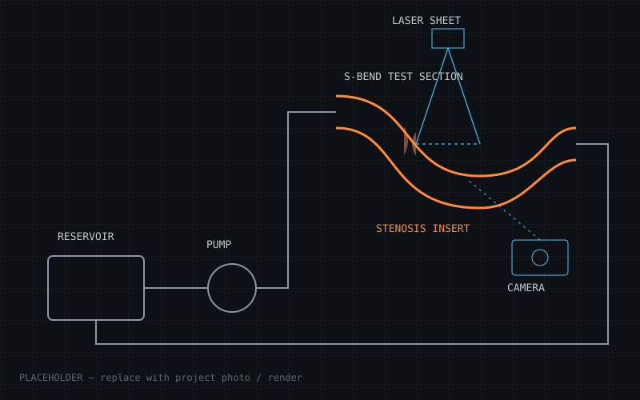

Capstone · 2026 · Team project
Closed-loop PIV flow rig — S-bend with stenosis inserts
- Problem
- Flow through curved, narrowed vessels (e.g. stenosed arteries) produces secondary flows and recirculation that are hard to predict. CFD models need experimental data to be trusted.
- Approach
- Designed and built a closed-loop water rig with a transparent S-bend test section and interchangeable stenosis inserts. Measured velocity fields with particle image velocimetry (PIV) and ran matching ANSYS Fluent simulations to compare against.
- Result
- [Add key results — e.g. "CFD centreline velocity within X% of PIV", "identified recirculation length of Y mm downstream of 50% stenosis", Reynolds number range tested.]
- ANSYS Fluent
- PIV
- SolidWorks
- MATLAB
- Rig design